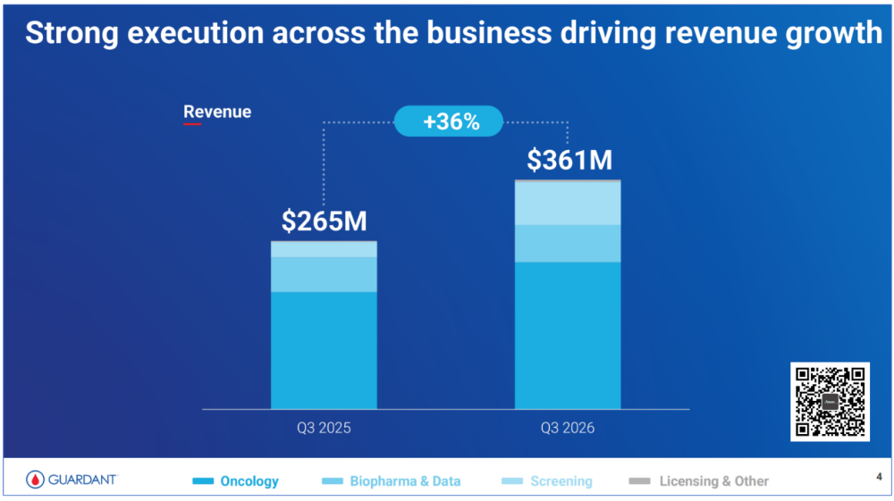
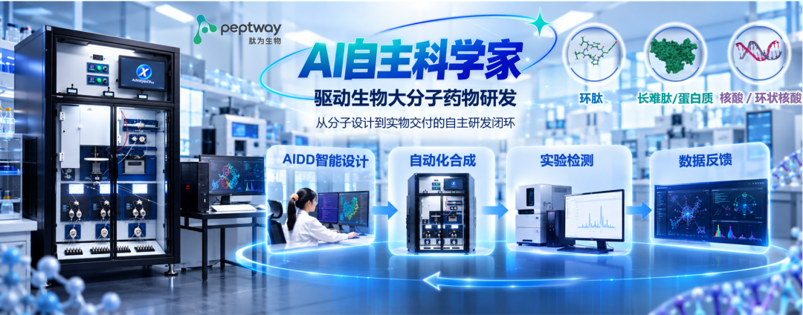
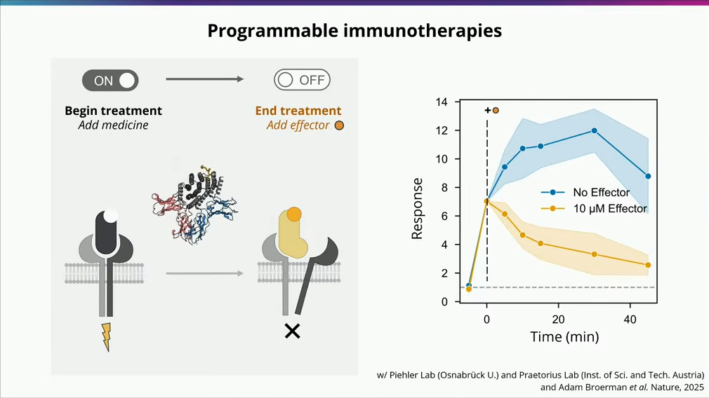
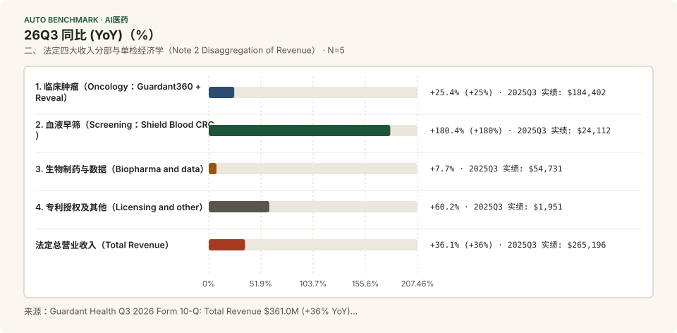
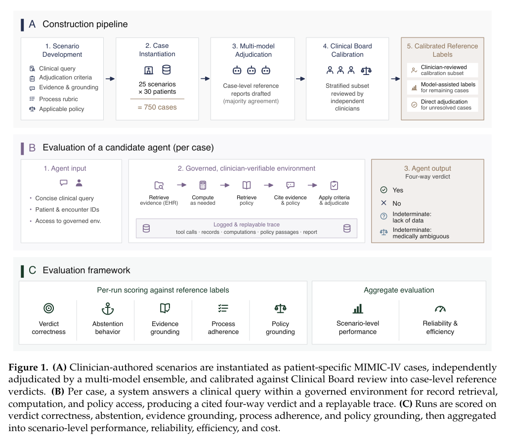

Guardant Health 26Q3 10-Q & NEJM ECLIPSE 2026-11-10 Guardant|癌症早筛好啊，得做啊 ‹1/4›放大 穿透 Guardant Health（NASDAQ: GH）26Q3 10-Q：总营收 $361.0M (+36% YoY)，Shield 肠癌血液早筛单季 8.3 万例 (+246%)、单检 COGS 降至 $330（CMS 报销 $1,495），但癌前腺瘤灵敏度仅 13.2%（远低于 Cologuard Plus 43.4%），且受 TwinStrand $245.2M 专利… 阅读导读 原件 ↗
JACS & Nat. Commun. · 浙大李承喜团队论文与肽为生物披露 2026-11-09 融资数千万元，MIT归国科学家要让AI从「设计药」变成「造出药」 ‹1/2›放大 穿透 MIT 博后、浙大李承喜创立的肽为生物（Peptway）：基于 JACS 2026 DAN 连接子 + CycloBot 70 通道合成仪（20–27 min 粗品纯度 >95%）与 Nat. Commun. CycloPepper（前瞻一致率 86%），横评晶泰、英硅、Recursion 与 Chemify。 · JACS & Nat. Commun. · 浙大李承喜团队… 阅读导读 原件 ↗
Royal Society · David Baker Croonian Lecture & RFD4-Proteina 2026-11-06 诺奖得主Baker最新演讲：AI正在颠覆生命科学！ ‹1/4›放大 穿透 2024 诺奖得主 David Baker 英国皇家学会克鲁尼安讲座与 UW IPD × NVIDIA RFD4-Proteina（2026.10）：零样本造出 Lenacapavir 酰胺连接酶（(S)-底物转化率 79% vs (R) 8.8%）、10 µM 变构可开关 IL-2、零全身毒性 IL-21 前药及阿尔茨海默病 Tau pT231 结合蛋白。 ·… 阅读导读 原件 ↗
Guardant Health (SEC 10-Q · IR) 2026-11-04 Guardant Health Q3 2026 Form 10-Q: Total… 1/1放大 穿透 Guardant Health（NASDAQ: GH，CIK 0001576280）2026Q3 SEC 10-Q 法定报表与电话会增量，单季总营收（Total Revenue）达 $360.975M（+36.1% YoY），法定四大收入分部完整闭合为临床肿瘤 Oncology $231.264M（117,000 Tests +58% YoY，Reveal MRD 检测量翻… 阅读导读 原件 ↗
Scale AI Labs · arXiv:2608.07796 2026-08-15 CliniCARE-Bench: Clinical Calibrated… ‹1/2›放大 穿透 Scale AI Labs 联合斯坦福、埃默里、范德堡与加州大学圣克鲁兹分校发布的纵向电子病历临床医学推理审计基准 CliniCARE-Bench（arXiv:2608.07796），该研究基于真实脱敏重症与住院数据库 MIMIC-IV (v3.1) 构建了横跨 14 个医学专科、25 类临床审计场景的 750 例患者纵向病历（Longitudinal… 阅读导读 原件 ↗